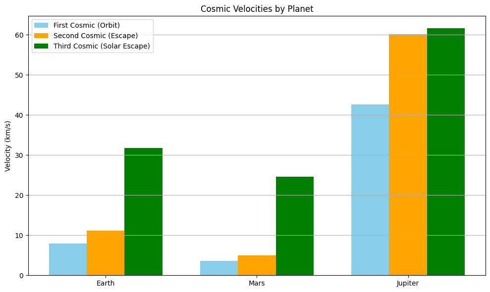

Problem 2
Scientific Exploration of Escape and Cosmic Velocities
1. Introduction
In the realm of astrodynamics, the ability to overcome gravitational constraints is described through cosmic velocities. These critical velocities determine the energy needed for orbital insertion, planetary escape, and departure from the solar system. The classification is:
- First Cosmic Velocity (\(v_1\)) – Minimum velocity to remain in circular orbit
- Second Cosmic Velocity (\(v_2\)) – Escape velocity from a celestial body
- Third Cosmic Velocity (\(v_3\)) – Escape velocity from the central star (e.g., the Sun)
These are cornerstones for space missions and planetary science, directly influencing mission architecture and propulsion requirements.
2. Theoretical Derivation
2.1 First Cosmic Velocity (\(v_1\))
Defined by the balance of gravitational and centripetal forces:
2.2 Second Cosmic Velocity (\(v_2\))
Derived from energy conservation: total mechanical energy equals zero when escaping to infinity.
2.3 Third Cosmic Velocity (\(v_3\))
To leave the gravitational field of both the planet and its host star, assuming launch from the planet:
Where: - \(M_s\) is the Sun’s mass - \(R\) is orbital radius of the planet
3. Numerical Calculations (Earth, Mars, Jupiter)
Constants: - \(G = 6.674 \times 10^{-11} \text{ m}^3/\text{kg} \cdot \text{s}^2\) - \(M_\odot = 1.989 \times 10^{30} \text{ kg}\)
Earth:
- \(M = 5.972 \times 10^{24}\) kg
- \(r = 6.371 \times 10^6\) m
- \(R = 1.496 \times 10^{11}\) m
Mars:
- \(M = 6.417 \times 10^{23}\) kg
- \(r = 3.389 \times 10^6\) m
- \(R = 2.279 \times 10^{11}\) m
Jupiter:
- \(M = 1.898 \times 10^{27}\) kg
- \(r = 6.9911 \times 10^7\) m
- \(R = 7.785 \times 10^{11}\) m
4. Python Simulation and Visualization
We implement a Python simulation to verify this:

You can run the simulation in Google Colab by clicking the link below:
5. Applications in Modern Astrophysics
- Rocket launch phases: Optimize fuel for achieving \(v_1\) and \(v_2\)
- Escape planning: Design of escape trajectories for Mars missions
- Gravity assist: Use \(v_3\) targeting and orbital boosts
- Astrobiology: Analyze which exoplanets can retain atmospheres based on \(v_2\)
6. Conclusion
Cosmic velocities form the physics backbone of spaceflight. Understanding \(v_1\), \(v_2\), and \(v_3\) allows for precise trajectory design, spacecraft staging, and mission profiling. These concepts remain indispensable for both current missions and future interstellar ambitions.